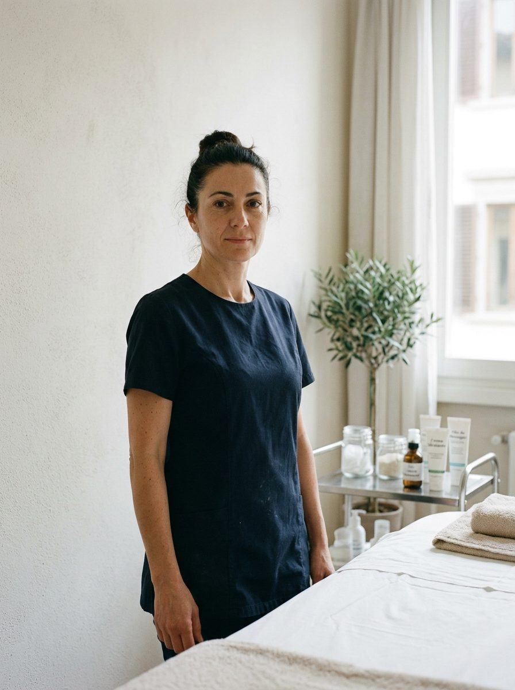

Estetista, segue la pelle sensibile e le pulizie del viso dal 2014
La prima volta non tocca quasi niente: guarda la pelle con la lampada, chiede cosa usi a casa e ti fa togliere almeno un prodotto. Il trattamento arriva dalla seconda seduta.